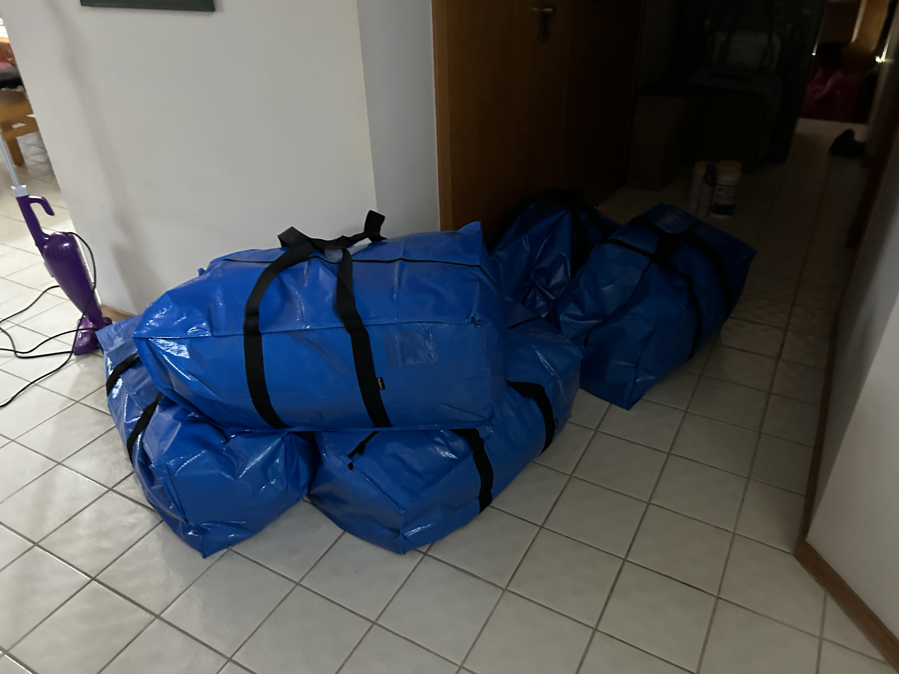

(Written by Claude 3.0 Opus)
오늘은 딸이 대학교 기숙사에서 봄 방학을 맞아 집으로 내려오는 날이었다. 아내가 차를 몰고 딸을 데리러 갔는데, 내려오는 길에 쇼핑을 좀 한 모양이다. 휴게소에 있는 프리미엄 아웃렛에 들렀다 왔다고 한다. 아내와 딸이 함께 쇼핑하는 모습을 상상하니 괜스레 흐뭇해졌다. 쇼핑백 안에는 의류부터 잡화까지 각종 물건들이 가득했다. 아내의 얼굴에도 함박웃음이 가득했다. 딸내미랑 오랜만에 쇼핑하니 기분 좋아 보였다. 딸아이가 집에 도착했을 때, 나는 반가운 마음에 얼른 차로 다가갔다.  트렁크에는 큼직한 파란색 가방들이 수북이 쌓여 있었다. 지난번 겨울 방학 때는 가방이 2개뿐이었는데, 이번에는 5개가 넘어 보였다. 옷가지, 신발, 가방 등 각종 쇼핑 물품들 때문인지 짐이 정말 많았다. 게다가 두꺼운 겨울 이불까지 들고 내려왔다. 계절이 봄이라 옷가지랑 물건이 많은 듯싶었다. 대학생 딸래미 치고는 짐이 제법 많아 보였다. 이삿짐 날라주는 아버지 노릇을 톡톡히 해야 할 것 같았다. 딸은 톡톡 튀는 발걸음으로 집 안으로 들어섰다. 청바지에 티셔츠 차림이 시원해 보였다. 여전히 에너지 넘치는 모습이 보기 좋았다. 방학이라 그런지 얼굴에 피로한 기색은 없었다. 짐을 풀어놓느라 잠시 집안이 어수선했지만, 딸이 있으니 사는 맛이 났다. 학교 기숙사 생활 때문에 맘편히 못 봤는데, 이렇게 방학 때라도 볼 수 있으니 좋았다. 아침 저녁으로 딸 얼굴 보는 재미에 행복했다. 딸이 짐을 풀자마자 학교에서 있었던 일을 재잘재잘 늘어놓기 시작했다. 동아리 활동 이야기, 전공 수업 과제 이야기까지 한참을 떠들어댔다. 말이 늘어지는 것도 모자라 손짓 발짓까지 곁들였다. 듣다 보니 새벽까지 과제하느라 밤을 꼴딱 새웠다는 걸 알게 되었다. 기숙사 생활 많이 힘들었나 보다. 엄마 아빠 속 썩이고 싶지 않아서 그런 말은 꺼내지 않았겠지. 과제 때문에 고생이 많았던 모양이었다. 학점 관리에 많은 신경 쓰는 것 같았다. 힘들어도 잘 참고 열심히 하는 딸이 대견스러웠다. 그렇게 한참을 수다 떨다가 갑자기 딸아이가 벌떡 일어났다. 짐 가방에서 빨래감을 꺼내더니 세탁기를 돌리기 시작했다. 대학생이 된 지금도 집에 내려오면 엄마 도와 집안일을 도맡아 하곤 했다. 엄청 깔끔한 성격이라 집 구석구석을 구질구질하게 못 봤다. 겨울 내내 쌓인 빨래를 한꺼번에 처리하려나 보다. 세제를 넣고 물을 틀어 세탁기를 돌리는 모습이 제법 슬기로웠다. 우리 집에 딸 같은 훌륭한 일꾼이 있어 든든했다. 막 새로 산 드럼세탁기가 빨래를 척척 해냈다. 딸이 좋아하는 노래가 세탁기에서 흘러나왔다. 예전에 쓰던 세탁기는 자주 고장 나서 빨래하기가 여간 불편한 게 아니었다. 최근에 드럼세탁기로 바꾼 걸 보고 딸이 무척 좋아했었다. 그 세탁기로 빨래하는 재미에 푹 빠진 것 같았다. 딸이 열심히 집안일 하는 걸 보며 뿌듯한 마음이 들었다. 세탁기 새로 사길 백번 잘했다는 생각이 들었다. 이번에 내려온 딸의 빨래감이 어마어마했다. 겨울 동안 못 가져갔던 빨래며 기숙사에서 입었던 옷들이며, 한 보따리가 족히 됐다. 게다가 배게 커버에, 이불 커버, 담요까지 다 빨아야 한다고 했다. 세탁기를 돌리는 게 한두 번이 아닐 듯싶었다. 다행히 드럼세탁기라 빨래를 한꺼번에 많이 돌릴 수 있었다. 딸이 그 많은 빨래를 하느라 부산을 떨었다. 우리 딸 정말 부지런하고 성실하다는 생각이 들었다. 딸은 집에 오자마자 설거지, 청소, 빨래 등 온갖 집안일을 도맡아 했다. 항상 저렇게 깔끔하고 꼼꼼한 성격이라 어디 가서 손색이 없으리라. 집안일도 나누어 하는 요령이 있는 것 같았다. 아내 혼자 집안일 하는 게 미안했는데, 이제 딸이 와서 함께 나눠 하니 마음이 놓였다. 나도 뭔가 도와줄 일이 없나 물색했지만, 아내와 딸이 척척 해내는 바람에 나설 틈이 없었다. 그렇게 집안일을 끝내고 딸은 개운한 얼굴로 소파에 앉았다. 두 손을 뻗어 기지개를 펴더니 환한 미소를 지었다. 딸이 집에 있으니 집안 분위기가 화사해졌다. 평소와 다르게 생기 넘치는 웃음소리가 집안 가득 울려 퍼졌다. 엄마랑 딸이랑 나란히 앉아 이런저런 할 말 없는 얘기를 나누는 모습이 보기 좋았다. 반면 나는 그저 못난 아버지 노릇을 톡톡히 했다. 세탁기 돌리는 것조차 제대로 못 하는 내가 부끄러웠다. 아내와 딸이 요리하고 설거지하는 동안 텔레비전이나 멍하니 보고 있다니. 뭐라도 거들어야겠다는 생각이 들었다. 그래서 어설픈 솜씨로 건조대에 빨래를 널기 시작했다. 그러자 딸이 와서는 빨래 너는 법을 가르쳐 주었다. 딸 덕에 건조대 사용법을 터득하게 되었다. 집에 딸이 오니 금세 활기찬 분위기로 바뀌었다. 항상 조용하던 거실에 웃음꽃이 피어났다. TV를 보다가도 딸이랑 이런저런 이야기를 나누게 된다. 딸 녀석이 아직 어리긴 하지만 어른스러운 면도 있어서, 대화하는 재미가 쏠쏠했다. 대학생활에 대한 이모저모를 듣고 있노라면, 세대 차이를 실감하게 된다. 그래도 최대한 딸의 눈높이에 맞추려고 노력했다. 딸이 내려와서 맘껏 집밥을 먹는 모습이 좋았다. 평소 학교에선 제대로 된 식사를 못 하니까. 아내는 딸이 좋아하는 음식을 해 주느라 부산을 떨었다. 정성 가득한 손맛이 음식 맛을 한층 더 끌어올렸다. 오랜만에 가족들이 둘러앉아 식사하는 게 정겨웠다. 예전처럼 사사건건 잔소리하지 않고, 그저 즐겁게 밥을 나누었다. 식탁에 둘러앉아 그간의 안부를 묻고 있노라면, 시간 가는 줄 몰랐다. 특히나 딸의 학교 생활과 앞으로의 진로에 관해 깊이 있는 대화를 나눴다. 속마음을 터놓고 얘기하던 딸의 진지한 눈빛이 오래도록 기억에 남을 것 같다. 조금은 어른이 된 듯한 모습이었다. 아쉽게도 방학이 길지 않아 금방 학교로 돌아가겠지. 하지만 이렇게 잠깐 집에 있는 동안만이라도 딸과 함께 시간 보내는 게 가족 모두에게 힐링이 된다. 어릴 땐 집에 있는 게 지겨워했던 딸이, 이제는 집이 편하다며 내려오는 걸 보면 나이 들었음을 실감하게 된다. 세월 참 빠르다. 소박하지만 화기애애한 분위기 속에 가족의 정을 나눴다. 웃고 떠들며 보낸 하루가 행복했다. 이런 일상의 소중함을 잊지 말아야겠다. 딸과 아내의 사랑스러운 모습을 마음에 담아두고 싶었다. 앞으로도 이렇게 화목하게 지냈으면 좋겠다. 비록 딸이 곧 학교로 돌아가겠지만, 다음 방학이 더욱 기다려진다.
Go Back to Brunch Page